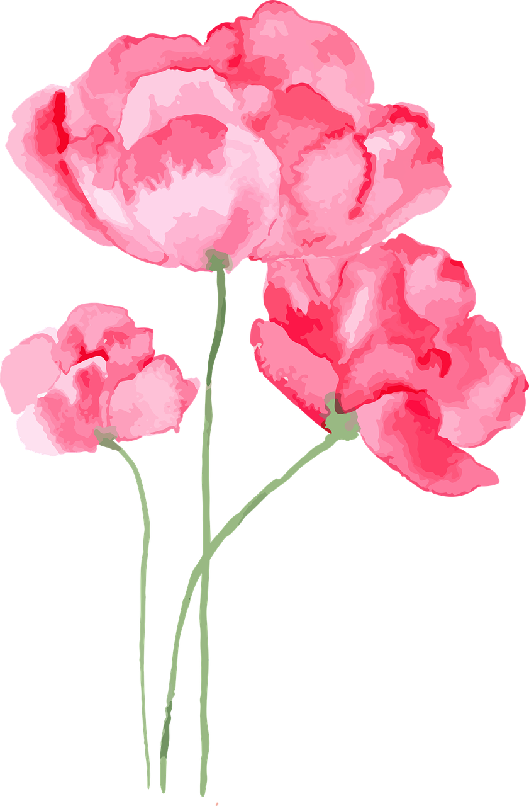

My Favorite Lofi to listen to when studying and sometimes reading!
I want to start off by saying I LOVED all the books. It had mystery and just a pinch of romance as well as detailing some things that teenagers can relate to! If you love mystery this series is the one for you. So many plot twists, amazing writing that’s great if you’re in a slump and for young adults but honestly anyone can read these.
Another mystery book series! The writing is easy to read and I liked it for the most part. There’s some romance in this as well and I could not predict the ending or most of the plot twists. It got a bit boring for me in the middle of the books, however I think it’s worth it if you really love mysteries. Targeted for young adult readers in my opinion.
